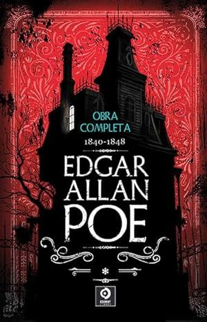

<!DOCTYPE html>
<html lang="es"></html>
<head>
	<meta charset="UTF-8">
	<meta name="viewport" content="width=device-width, initial-scale=1.0">
	<title>Libro 6 - Cuentos y Relatos de Edgar Allan Poe</title>
	<style>
		body {
			font-family: Arial, sans-serif;
			line-height: 1.6;
			margin: 20px;
			background-color: #f4f4f4;
		}
		.container {
			max-width: 800px;
			margin: auto;
			background: #fff;
			padding: 20px;
			box-shadow: 0 0 10px rgba(0, 0, 0, 0.1);
		}
		img {
			display: block;
			margin: 0 auto 20px;
		}
		h1 {
			text-align: center;
			color: #333;
		}
		p {
			text-align: justify;
		}
	</style>
</head>
<body>
	<div class="container">
		<h1>Libro 6: Cuentos y Relatos de Edgar Allan Poe</h1>
		
		<p>Edgar Allan Poe nace en Boston en 1809. Sus padres pertenecían a una compañía ambulante de actores. Siendo muy pequeño, el padre abandona a Edgar y a su madre, y cuando solo contaba con dos años de edad, muere su madre.</p>
		<p>Fue recogido por un afamado comerciante de la ciudad: John Allan. Comenzando una nueva vida con sus padres adoptivos. Su nombre será, desde ese momento, Edgar Allan Poe. Considerado uno de los padres del cuento moderno y creador del género policíaco. Fue poeta, periodista, narrador y crítico estadounidense.</p>
		<p>Algunos cuentos y relatos incluidos en este primer volumen:</p>
		<ul>
			<li>El duque de l’Omelette</li>
			<li>Cuento de Jerusalén</li>
			<li>Bon-bon</li>
			<li>Manuscrito hallado en una botella</li>
			<li>Los leones</li>
			<li>El rey peste</li>
			<li>Cuatro bestias en una</li>
			<li>William Wilson</li>
			<li>La isla del hada</li>
			<li>El escarabajo de oro</li>
			<li>Los anteojos</li>
			<li>El poder de las palabras</li>
		</ul>
	</div>
</body>
</html>